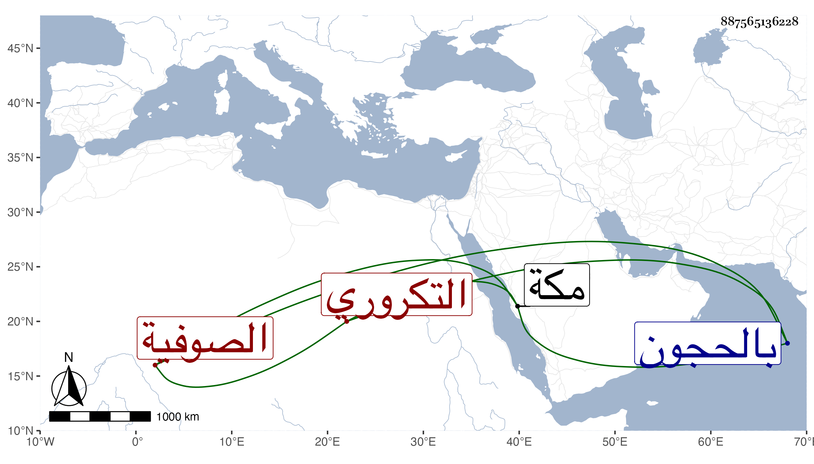

0902Sakhawi.DawLamic.ITO20230111-ara1.EIS1600.887565136228
Biography ID: 887565136228
465
محمد التكروري أحد الصوفية بالزمامية من مكة . ممن كان يخدم عبد المحسن الشاذلي اليماني أخا عبد الرؤوف ، مات في ليلة الاثنين عاشر المحرم سنة ست وثمانين وصلي عليه عقب الصبح من الغد ودفن عند جماعة رباط الموفق بالحجون من المعلاة رحمه الله .
